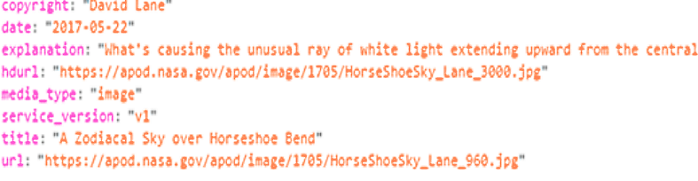

You can view what the response contains by adding console.log(dataIn); after var dataIn = JSON.parse(request.responseText); as provided in the above JavaScript code. Hitting f12 in most browsers will bring up the console window. JSON.parse(); is used to parse the response into a format that allows us to access the properties that we need. If you are not familiar with JSON, you can learn about it HERE Keep in mind that dataIn is the variable that we have assigned the response to. By opening the browsers console window after opening the page that implements our APoD code, we can see that the response has the following properties, all containing strings of some sort:
These properties are what we will access in order to populate a webpage with the title, image, and, description. The code example shows that this is done using the document.getElementById() method and setting the proper HTML property equal to the proper response property. If we get an error and the response we expect is not received, then an error message will show up in place of the title. Notice that we do not actually send the request until after the event listener is added to the request. The code contained by the function that is an argument of addEventListener, does not actually get executed until a response is received. You can view my page which implements the APoD code that we discussed, HERE.
NEXT